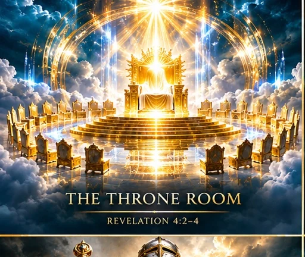
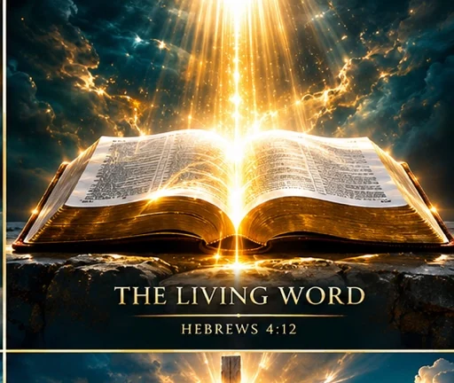

Sunday Worship
Time to be announced
A legacy of faith. A future of purpose.
Welcome to Open Door Church, where God’s Word is our foundation and faith moves us forward.
Life at Open Door
A glimpse of the people, spaces, and heritage of Open Door Church.

Join us in worship
We look forward to worshiping with you. Times will be posted once confirmed.
Time to be announced
Time to be announced
402 W Oklahoma St, Pampa, TX 79065
Plan Your VisitGather with us
Join us for worship, fellowship, and opportunities to grow together.
Check back for confirmed dates and details. You can also follow the church's official Facebook page for announcements.
Church announcements on Facebook ↗Kingdom of Heaven • Scripture-inspired
Kingdom of Heaven.


Your next step
Whether you’re visiting for the first time or looking to grow, discover where to begin.
Explore the space, know what to expect, and find the details you need before arriving.
Explore your visitLearn about the biblical truths that guide our worship, ministry, and everyday lives.
Our beliefsExplore the four principles that shape a Winner’s Mindset and purposeful Christian living.
Our missionOur centennial legacy
Since November 1926, Open Door Church has stood on the foundation of God’s Word. As we honor a century of ministry, we look forward with gratitude, faith, and purpose.
Explore Our HistoryWho we are
Through generations and changes in leadership, Open Door has remained anchored in God’s Word as the standard for life, leadership, and decision-making.
Our StoryOur mission
Four principles shape how we pursue God’s purpose with faith, wisdom, and excellence.
See beyond current circumstances and envision God’s greater purpose.
Ephesians 3:20Apply biblical truth with creativity, wisdom, and excellence.
Colossians 3:23Move from inspiration to bold, disciplined action.
James 1:22Pursue wisdom, understanding, and discernment through God’s Word.
James 1:5Your first Sunday
A simple guide to getting acquainted with Open Door Church.
See photos of the exterior, welcome area, and sanctuary before your visit.
Service times are being confirmed. Directions to 402 W Oklahoma St, Pampa, TX 79065 are available below.
Join us as we gather around worship, fellowship, and the Word of God.

You are welcome here
Get to know our church, see our sanctuary, and find helpful information for your first visit.
Plan Your VisitOur foundation
Grounded in truth. Growing in faith. Building with excellence.
What We BelieveOur foundation built on Christ
John 17:17 · KJV
“Sanctify them through thy truth: thy word is truth.”
God’s Word is the foundation of truth.
Ephesians 6:10–11 · KJV
Stand strong in the Lord and put on the whole armor of God.
Matthew 6:33 · KJV
Seek first the kingdom of God and His righteousness.